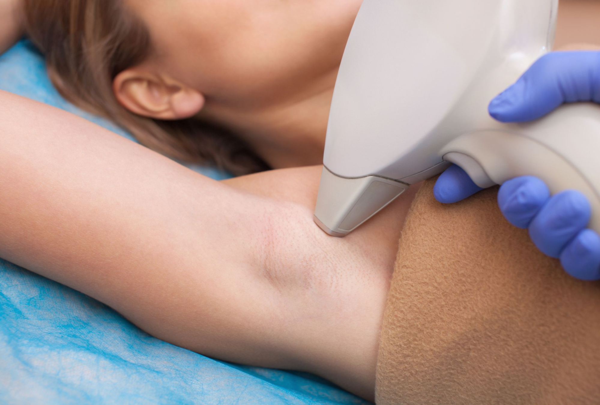
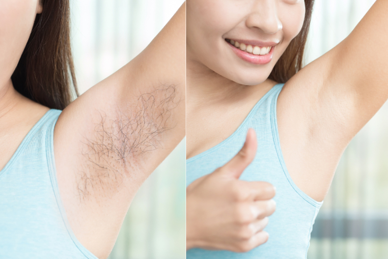
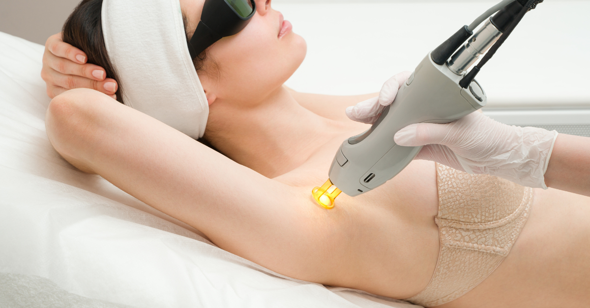

Triệt lông nách giá bao nhiêu? Các yếu tố ảnh hưởng đến chi phí và hiệu quả
Mục lục
Tổng quan về triệt lông nách và tầm quan trọng
Triệt lông nách từ lâu đã trở thành một trong những dịch vụ thẩm mỹ được nhiều người quan tâm, không chỉ vì lý do thẩm mỹ mà còn vì nhu cầu vệ sinh và cảm giác tự tin trong sinh hoạt hàng ngày. Tuy nhiên, trước khi bắt đầu liệu trình, rất nhiều người băn khoăn: triệt lông nách giá bao nhiêu? Và điều gì khiến mức giá này chênh lệch giữa các cơ sở?
Bài viết dưới đây sẽ giúp bạn hiểu rõ mức chi phí phổ biến, các yếu tố ảnh hưởng và cách lựa chọn dịch vụ phù hợp, hiệu quả và an toàn.
1. Mức giá phổ biến khi triệt lông nách
Hiện nay, giá triệt lông nách trên thị trường dao động trong khoảng từ 300.000 – 1.000.000 VNĐ cho mỗi buổi điều trị. Nếu lựa chọn theo gói liệu trình (6 – 10 buổi), mức giá tổng có thể nằm trong khoảng 2.000.000 – 6.000.000 VNĐ, tùy vào công nghệ áp dụng, tình trạng lông và chính sách ưu đãi của từng nơi.
Ngoài ra, nhiều cơ sở còn cung cấp gói triệt trọn đời, combo nhiều vùng (nách, tay, chân, bikini), hoặc ưu đãi theo tháng giúp khách hàng tiết kiệm hơn so với mua lẻ từng buổi.
Bạn có thể tham khảo chi tiết tại bảng giá triệt lông nách được cập nhật công khai từ những đơn vị uy tín để có cái nhìn rõ ràng và dễ so sánh.
2. Các yếu tố ảnh hưởng đến giá triệt lông nách
Không có một mức giá cố định áp dụng cho tất cả mọi người. Mỗi trường hợp sẽ có mức chi phí riêng tùy thuộc vào nhiều yếu tố. Dưới đây là những yếu tố quan trọng nhất tác động đến giá triệt lông nách.
2.1. Công nghệ triệt lông được sử dụng
Đây là yếu tố quan trọng nhất quyết định đến chi phí dịch vụ. Trên thị trường hiện nay có một số công nghệ phổ biến như:
- IPL (Intense Pulsed Light): giá thấp, phù hợp với lông mảnh, da sáng nhưng hiệu quả không cao với lông cứng hoặc nang sâu.
- Diode Laser: giá cao hơn, hiệu quả triệt sạch, ít đau, phù hợp với da nhạy cảm và vùng nách.
- OPT (Optimal Pulse Technology): công nghệ cải tiến từ IPL, hiệu quả đồng đều hơn, an toàn với nhiều loại da.
- Laser lạnh thế hệ mới: giá cao nhất nhưng triệt sâu, ít gây nóng rát và phục hồi nhanh.
Công nghệ càng hiện đại thì mức giá càng cao, nhưng bù lại hiệu quả triệt thường cao hơn và thời gian duy trì kết quả cũng lâu hơn.
2.2. Tình trạng lông và màu da
Cơ địa mỗi người khác nhau, do đó mức độ phản ứng với công nghệ triệt lông cũng khác nhau. Những người có lông dày, sợi cứng, nang sâu sẽ cần nhiều buổi điều trị hơn, đồng nghĩa với chi phí cao hơn.
Ngoài ra, màu da cũng là yếu tố ảnh hưởng. Người có làn da sáng thường dễ triệt hơn, trong khi da tối màu hoặc nhạy cảm cần được xử lý cẩn thận với thiết bị và thông số phù hợp, dẫn đến giá thành cao hơn.
2.3. Số buổi trong liệu trình
Một liệu trình cơ bản thường gồm từ 6 đến 10 buổi, tùy theo khả năng đáp ứng của da và chu kỳ mọc lại của lông. Một số người cơ địa phù hợp có thể đạt hiệu quả sau 6 buổi, nhưng cũng có trường hợp cần 8 – 10 buổi hoặc thêm buổi duy trì định kỳ để giữ kết quả lâu dài.
Do đó, nếu chỉ tính theo buổi lẻ, tổng chi phí sẽ cao hơn so với việc mua trọn gói ngay từ đầu.
2.4. Tay nghề kỹ thuật viên và uy tín cơ sở
Cơ sở uy tín thường đầu tư vào đội ngũ kỹ thuật viên được đào tạo bài bản, biết cách điều chỉnh máy móc theo tình trạng da và lông của từng khách hàng. Điều này không chỉ giúp tăng hiệu quả triệt mà còn hạn chế tối đa nguy cơ tổn thương da.
Mức giá ở các cơ sở chuyên nghiệp có thể cao hơn, nhưng đổi lại là sự an toàn và cam kết rõ ràng về chất lượng dịch vụ.
2.5. Chính sách ưu đãi và dịch vụ đi kèm
Nhiều nơi thường xuyên triển khai các chương trình khuyến mãi, tặng buổi triệt miễn phí, hoặc giảm giá khi mua combo triệt nhiều vùng. Ngoài ra, có nơi còn hỗ trợ chăm sóc da sau triệt, giúp phục hồi nhanh hơn, làm sáng vùng da nách và se khít lỗ chân lông.
Tùy theo nhu cầu, bạn có thể lựa chọn gói dịch vụ phù hợp để vừa tiết kiệm chi phí vừa đảm bảo hiệu quả.
3. Triệt lông nách có thật sự vĩnh viễn không?
Triệt lông bằng công nghệ laser thường được gọi là “vĩnh viễn”, nhưng trên thực tế, kết quả không hoàn toàn như vậy. Công nghệ này có thể làm chậm quá trình mọc lại của lông và giảm mật độ lông rõ rệt, nhưng không thể loại bỏ hoàn toàn lông mãi mãi trong mọi trường hợp.
Theo Mayo Clinic, triệt lông laser không mang lại hiệu quả vĩnh viễn tuyệt đối, mà chỉ giúp trì hoãn quá trình mọc lại của lông trong thời gian dài. Tùy vào cơ địa và tình trạng lông, nhiều người vẫn cần thực hiện thêm các buổi duy trì định kỳ mỗi 6 đến 12 tháng để đảm bảo hiệu quả lâu dài.
Nguồn tham khảo: Laser hair removal – Mayo Clinic
4. So sánh triệt lông nách tại nhà và tại cơ sở chuyên nghiệp
| Tiêu chí | Triệt tại nhà | Triệt tại cơ sở chuyên nghiệp |
|---|---|---|
| Thiết bị sử dụng | Máy cá nhân công suất thấp | Máy y tế, công nghệ cao |
| Hiệu quả | Không đều, dễ tái mọc | Tốt hơn, duy trì lâu |
| Độ an toàn | Dễ kích ứng, bỏng da | Được kiểm soát bởi chuyên viên |
| Thời gian thực hiện | Phải làm thường xuyên | Cách nhau 3 – 4 tuần/buổi |
| Chi phí ban đầu | Rẻ hơn | Cao hơn nhưng tiết kiệm về lâu dài |
Nếu bạn muốn kết quả nhanh, an toàn và lâu dài, triệt tại cơ sở chuyên nghiệp với công nghệ phù hợp sẽ là lựa chọn tối ưu.
5. Lưu ý quan trọng trước và sau khi triệt lông nách
Trước khi triệt:
- Không wax, cạo sát hoặc dùng kem tẩy lông ít nhất 3 – 5 ngày.
- Không sử dụng lăn khử mùi, mỹ phẩm chứa cồn hoặc axit.
- Tránh phơi nắng vùng nách trước khi điều trị.
Sau khi triệt:
- Tránh vận động mạnh, không mặc áo quá bó sát trong 24 giờ đầu.
- Không tắm nước nóng, xông hơi hoặc dùng sữa tắm có mùi mạnh.
- Dưỡng ẩm bằng sản phẩm nhẹ dịu, không hương liệu.
Chăm sóc đúng cách giúp da phục hồi nhanh và hạn chế các rủi ro như rát da, kích ứng hoặc lông mọc ngược.
6. Kết luận
Hiểu rõ về các yếu tố ảnh hưởng đến giá triệt lông nách sẽ giúp bạn dễ dàng đưa ra lựa chọn phù hợp với nhu cầu và ngân sách của mình. Dù là triệt tại nhà hay tại cơ sở chuyên nghiệp, điều quan trọng là bạn cần tìm hiểu kỹ công nghệ, quy trình và mức độ uy tín của nơi thực hiện.
Đừng quá chú trọng vào mức giá thấp mà bỏ qua yếu tố an toàn và hiệu quả lâu dài. Một quyết định đúng ngay từ đầu sẽ giúp bạn tiết kiệm nhiều hơn về sau.